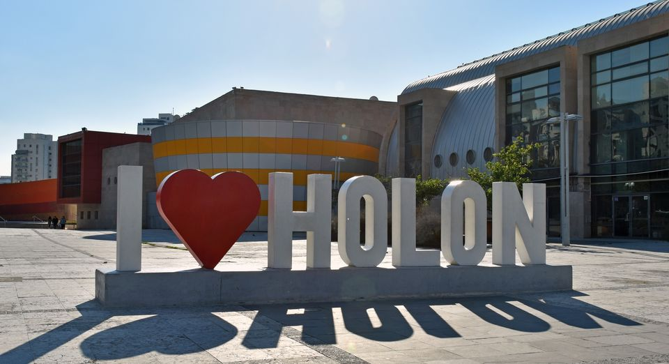

מוטי ששון
מוטי ששון (נולד ב-28 בפברואר 1947) הוא ראש העירייה החמישי של
חולון, המכהן בתפקידו מאז 1993.
במהלך כהונתו נוספו בעיר שטחים ירוקים וגנים. הוא פעל לבסס את תדמיתה
בתור "עיר הילדים" הישראלית. לשם כך הוקמו מוזיאון הילדים חולון וכן
גני סיפור ברחבי העיר (גן משחקים עם מוטיבים עיצוביים מספרי ילדים).
בנוסף לכך הוקמו פארק פרס, מדיטק, סינמטק חולון, המרכז הישראלי
לאמנות דיגיטלית, המוזיאון הישראלי לקריקטורה ולקומיקס, מוזיאון
הבובות, מוזיאון העיצוב וקניון חולון.
על כל זאת ועוד זכתה חולון במשך חמש שנים ברציפות בציון של "חמישה
כוכבי יופי" מטעם המועצה לישראל יפה, ובשנת 2000 זכתה בפרס היוקרתי
בתחרות – "דגל היופי". בשנים שלאחר מכן זכתה העיר מספר פעמים נוספות
ב"חמישה כוכבי יופי". בשנת 2008 זכתה חולון (יחד עם ראשון לציון, רמת
גן, כפר תבור וכרמיאל) בתואר "עמית קריה יפה" המוענק על זכייה
ב"חמישה כוכבי יופי" במשך 15 שנה ברציפות. העירייה בראשותו זכתה
בפרסי ניהול תקציבי ובפרסי ניהול משק המים

עיר חולון
חוֹלוֹן היא עיר במחוז תל אביב, העשירית בגודל אוכלוסייתה בישראל.
היא ממוקמת מדרום-מזרח לתל אביב, מצפון לראשון לציון, ממזרח לבת ים
וממערב לכביש 4. שטח השיפוט שלה הוא 19,200 דונם ואוכלוסייתה מונה
כ-194,273 תושבים (נכון לשנת 2018 ע"פ נתוני הלמ"ס). העיר נוסדה בשנת
1940 כאיחוד של חמש שכונות: גרין, מולדת, אגרובנק, קריית עבודה
ושכונת עם. חולון הוכרזה כעיר בשנת 1950. העיר חברה בארגון פורום
ה-15, והיא העיר השלישית בגודלה במחוז תל אביב.

העדלאידע
עַדְלֹאיָדַע, או עַדְלָיָדַע, היא תהלוכה היתולית דמוית קרנבל
הנערכת בחג פורים או בשושן פורים. זוהי מסורת, שראשיתה בראשית ימיה
של תל אביב, ב-1912. היא הייתה לאירוע המוני בתקופת היישוב, וחודשה
בימי המדינה.
תהלוכת העדלאידע הראשונה נערכה בתל אביב הקטנה כבר בשנה השלישית
להיווסדה של העיר, בפורים 1912, ביוזמתו של אברהם אלדמע הצעיר, מורה
לציור ומלאכה בגימנסיה הרצליה. התהלוכה הססגונית, ובה תלמידים
ומבוגרים מחופשים ברוח החג, יצאה מבניין הגימנסיה וצעדה לאורך רחוב
הרצל עד מסילת הברזל. עקב הצלחתה החליט ראש מועצת העיר מאיר דיזנגוף
שהיא תתקיים גם בשנה שלאחר מכן, במימון המועצה. במלחמת העולם הראשונה
הופסקה העדליאדע, והיא התחדשה לאחריה.
לאחר קום המדינה
העדלאידע בתל אביב בוטלה למשך כשני עשורים – החל משנת 1936, בצל המרד
הערבי הגדול ולאחריו מלחמת העולם השנייה, מלחמת העצמאות, קום המדינה
ושנותיה הראשונות – וחודשה רק בשנת 1955. באותה שנה השתתפו בה מעל
חצי מיליון צופים. בסוף שנות השישים התפוגגה המסורת התל אביבית
והמצעד הועבר לחולון, אם כי הוא לא לבש את האופי ההמוני של האירועים
בתל אביב הקטנה.
בשנים האחרונות נעשה ניסיון לחזור אל המסורת ולחדש את העדלאידע
כאירוע רחוב חגיגי וגדול בערים השונות. בהרצליה מתקיימת עדלאידע החל
משנת 2014, כאשר בכל שנה היא מוקדשת לנושא מסוים. כיום העדלאידע
הגדולה במדינה מתקיימת בחולון עם אלפי משתתפים בצעדה. בצעדות של 2017
ו-2018 השתתפו כ-200 אלף צופים. בעדלאידע החולונית מושקעים מדי שנה
מיליוני שקלים והיא נחשבת לגדולה והמושקעת ביותר בכל הארץ.

מפת התהלוכה
התהלוכה המסורתית תצא לדרך ב-12:00 ותתחיל במשדרות משה שרת 25 ותחלוף
לאורך רחוב אלופי צה"ל ושדרות גולדה מאיר. התהלוכה מסתיימת ברחוב
פנחס אילון
החל מ-07:00 ייסגר לתנועה רחוב מקווה ישראל, מרחוב שנקר ועד רחוב
גאולים, לשני הכיוונים. בשעה 8 בבוקר יסגרו לתנועה צירים נוספים:
רחוב סוקולוב מרחוב מקווה ישראל ועד שדרות דב הוז, רחוב קראוזה פינת
פבריגט לכיוון צפון, רחוב חומה ומגדל מרחוב חנקין לכיוון צפון, רחוב
ההסתדרות בין צומת שנקר לצומת זלמן ארן לשני הכיוונים, כיכר הלוחמים
לכיוון דרום, ורחוב קוגל מפינת רחוב ה' באייר לכיוון דרום.